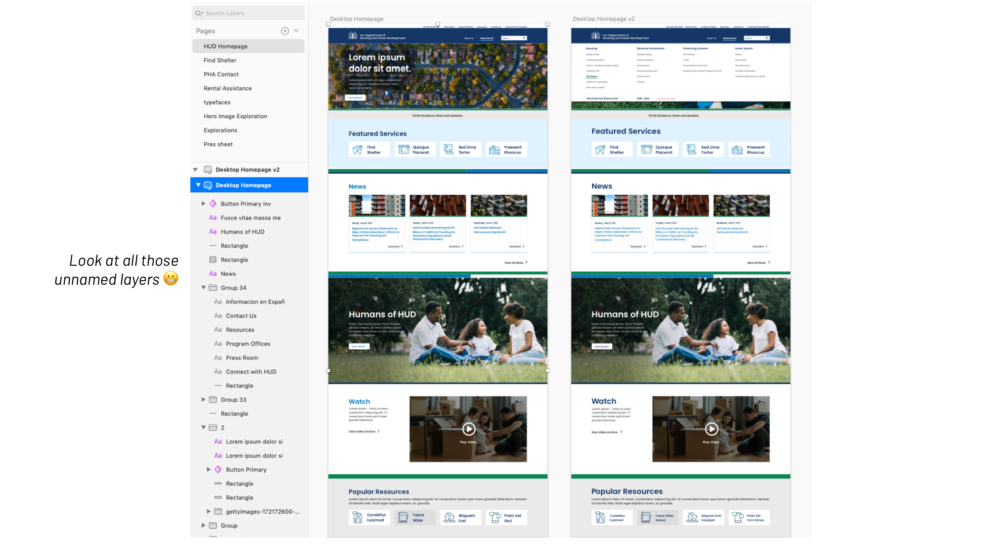
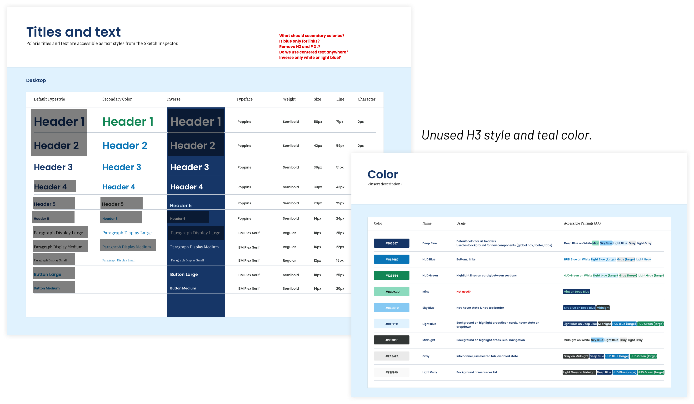
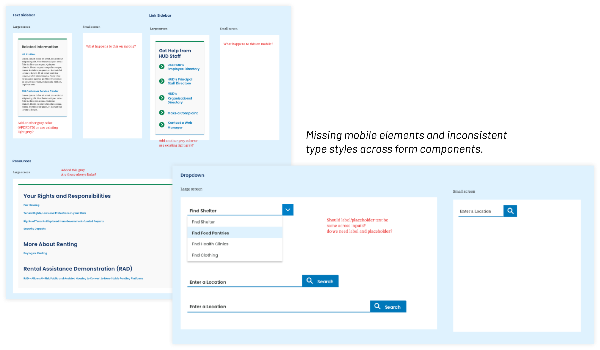

<!DOCTYPE html>
<html lang="en">

<head>
	<title>Emily Porat | EF Discovery & Redesign</title>
	<link rel="stylesheet" type="text/css" href="styles/global.css">
	<link rel="stylesheet" type="text/css" href="styles/global-mobile.css">
	<link rel="stylesheet" type="text/css" href="styles/nav.css">
	<link rel="stylesheet" type="text/css" href="styles/projects.css">
	<script src="https://ajax.googleapis.com/ajax/libs/jquery/1.9.1/jquery.min.js"></script>
	<link rel="icon" type="image/x-icon" href="pics/favicon.svg"/>
	<!-- Icons -->
	<script defer src="https://use.fontawesome.com/releases/v5.13.0/js/all.js"></script>
	<script defer src="https://use.fontawesome.com/releases/v5.13.0/js/v4-shims.js"></script>
	<!-- Global site tag (gtag.js) - Google Analytics -->
	<script async src="https://www.googletagmanager.com/gtag/js?id=UA-119412150-1"></script>
	<script>
		window.dataLayer = window.dataLayer || [];
		function gtag(){dataLayer.push(arguments);}
		gtag('js', new Date());

		gtag('config', 'UA-119412150-1');

      // load other reused files
      $(function() {
      	$('#nav').load('http://emilyporat.com/nav.html');
      	$('#footer').load('http://emilyporat.com/footer.html');
      });
  </script>
</head>

</html>
<body class="preload">
	<meta name="viewport" content="width=device-width">
	<div id="nav"></div>
	<div id="arrow-up" onclick="slideUp()"><i class="fa fa-angle-up"></i></div>	

	<div id="modal_background">
		<div id="prompt" class="pw_prompt">
			<h3>EF Discovery & Redesign</h3>
			<p>👋 Hey there! I can't talk about this project publicly, so shoot me an <a href="mailto:emporat@gmail.com" target="_blank">email</a> if you'd like to learn more.</p>
			<label>Password:</label>
			<input id="pw_prompt_input1" type="password"></input>
			<button onclick="checkPassword()">Submit</button>
		</div>
	</div>

	<div class="full-width" style="background-color: var(--purple);">
		<div class="title-wrapper animate-reveal animate-first">
			<div class="title">
				<div>
					<h4>2021 • Deloitte Digital</h4>
					<h1 style="color: black">EF Discovery & Redesign</h1>
				</div>
			</div>
		</div>

		
	</div>

	<div class="panel context">
		<div class="context-summary">
			<h2>Context</h2>
			<h3>
				I evaluated the overarching user experience of epilepsy.com and provided strategic recommendations that fed into a product roadmap and vision.
			</h3>
			<div class="short-divider"></div>
			<p>	
				EF engaged Deloitte to conduct a comprehensive evaluation of their digital footprint, focusing on their flagship site, epilepsy.com. User Experience, Content Strategy, and Data teams will collaborate to understand EF’s pain points from an organizational, technical, strategic, and end-user perspective with the end goal of providing strategic recommendations for each workstream and an overarching Product Vision and Product Roadmap.
			</p>

			<p>
				With these goals in mind, I conducted a heuristic evaluation, stakeholder and user interviews, and developed Modes & Mindsets and Journey Maps to illustrate the user experience and inform future design & dev efforts.
			</p>

			<p><em>Read time: TBD</em></p>

		</div>

		<div class="context-specifics">
			<h4>Length</h4>
			<div class="context-description"><p>12 months</p></div>
			<h4>Team</h4>
			<div class="context-description"><p>I managed a Jr. UX Designer</p></div>
			<h4>Skills</h4> 
			<div class="context-description"><p>Component Audit, Design Systems, Symbols & Organization</p></div>
			<h4>Tools</h4><div class="context-description"><p>Sketch, InVision, Abstract</p></div>
		</div>
	</div>

	<div class="full-width-mid-page">
		<div class="panel dark" style="background-color: var(--mediumgray)">
			<h2 style="padding-top: 5%;">Where we started</h2>
			<h3 style="padding-left: 15%; padding-right: 15%">There weren't any symbols or text styles. Groups were ad-hoc and most didn't have labels.</h3>
			
		</div>
	</div>


	<div class="panel" id="Component Audit">
		<h2 class="body right">Component Audit</h2>
			<div class="body right">
				<p>My first step was to simply take stock of all the components, text styles, and colors. I started with the initial style guide and built style sheets for each of those areas. I marked off text styles that were used multiple times and noticed that H3 and "Paragraph XL" were both missing. I also found a teal color that was shown in the original style guide but not actually used anywhere throughout the UI. Through this exercise, we were able to remove those unnecessary styles and tighten up the existing ones.
				</p>

				<p>Throughout this exercise, I also checked all color combos for contrast accessibility and noted all acceptable pairings for our reference.</p>

				

				<p>On the component level, I looked across all pages for inconsistencies and gaps, especially for mobile design. I found some small issues with different shades of gray, type styles for forms, and components that had no mobile counterparts.</p>

				
			</div>
	</div>


	  	
  	<div id="footer"></div>
  	</meta>
  </body>

  <script src="js/general.js"></script>

</html>